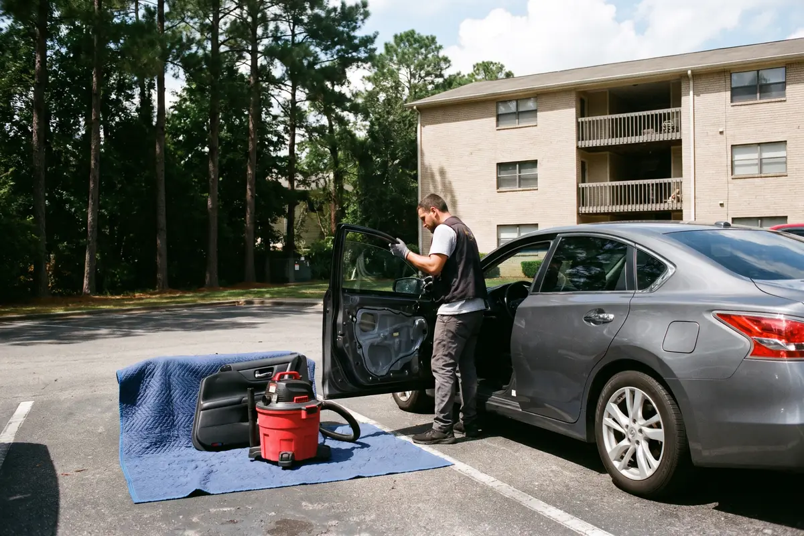

Tallahassee Auto Glass Repair handles five kinds of glass work, all done where your car is parked. Find yours below, or call and describe the damage and we will tell you which one fits.
Windshield replacement in Tallahassee is the fix for a crack longer than about six inches, a break at the edge of the glass, or damage in the driver’s view. It suits anyone whose windshield can no longer be safely repaired.
Left alone, a long crack keeps running with every hot day and pothole. With comprehensive coverage, Florida law waives the deductible on windshields, so waiting rarely saves money.
Call us today for windshield replacement in Tallahassee. Read more about windshield replacement.

Windshield chip repair in Tallahassee fills a fresh rock chip with clear resin so it stops spreading and gets much harder to see. It works for chips smaller than a quarter that sit away from the edges.
Ignored, a chip collects dirt and water. One hot afternoon followed by a blast of AC can turn it into a crack that needs a whole new windshield.
Call us today for windshield chip repair in Tallahassee. Read more about windshield chip repair.

Car window replacement in Tallahassee covers door glass, small quarter windows and rear windshields broken by a break-in, an accident or a failed regulator. Side glass is tempered, so it shatters into small pieces that have to be cleaned out of the door and the cabin.
Until it is replaced, a broken window lets in rain and leaves the car easy to get into. Plastic and tape rarely make it through a summer downpour.
Call us today for car window replacement in Tallahassee. Read more about car window replacement.

Storm damage auto glass service in Tallahassee handles windshields, side windows and back glass broken by falling limbs, hail or debris thrown by high wind. Tallahassee has more tree cover than most Florida cities, so limb damage is common after a bad storm.
After a storm, an open window lets rain soak the seats and carpet within hours, and mold follows. A cracked windshield can also give way if the car is hit again.
Call us today for storm damage auto glass in Tallahassee. Read more about storm damage auto glass.

ADAS camera calibration in Tallahassee re-aims the forward camera behind the rearview mirror after a windshield is replaced. Most newer vehicles with lane-keep assist, automatic emergency braking or adaptive cruise control need it.
Skipped, the camera can read the lane a few degrees off. Warning lights may come on, or the safety systems may brake or steer at the wrong moment.
Call us today for ADAS camera calibration in Tallahassee. Read more about ADAS camera calibration.

Call and describe the damage. We will tell you whether it is a repair or a replacement and give you a free quote.
Call (850) 583-9782 Now